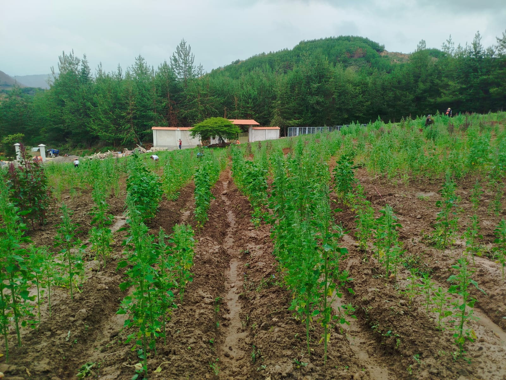

Reflexiones de un agrónomo curioso🌾🔍

🔍 Investigar sin saber muy bien cómo
Nadie te enseña de un día para otro cómo investigar bien. Se aprende a punta de ensayo y error, leyendo papers que a veces no entiendes del todo, y preguntando mucho. Ese proceso, aunque lento, es el que más me ha formado
📈 Entre datos y campo
Lo que más me gusta de este camino es que no tengo que elegir entre estar en la chacra o frente a una pantalla. Ambos mundos se complementan, y cada dato que analizo termina teniendo una historia de campo detrás
🌱 Lo que viene
Sigo en proceso, aprendiendo herramientas nuevas y tratando de conectar mejor la investigación agrícola con la tecnología. No tengo todo resuelto, pero cada vez tengo más claro hacia dónde quiero ir
← Back to Blog